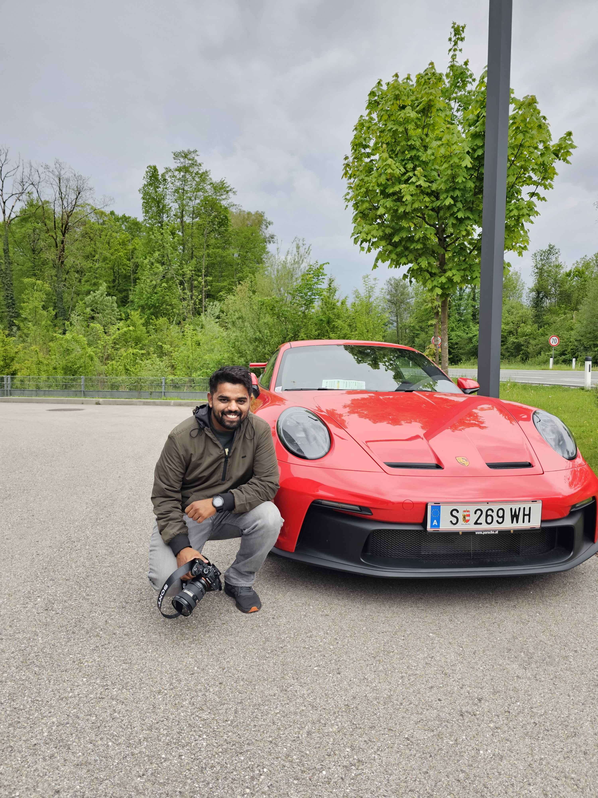

Hey there! I’m Ram, a Mechanical Engineer by education who found a passion for retouching. What began as a hobby photographing cars and bikes for friends evolved into a dedicated pursuit of mastering Photoshop.
I enjoy the creative process of enhancing images digitally, which has not only refined my skills but also connected me with incredible people and unforgettable experiences.
Outside of work, I'm passionate about riding bikes, setting laptimes around the Nordschleife in Forza Motorsport, and go-karting. These hobbies not only energize me but also inspire my creative work.